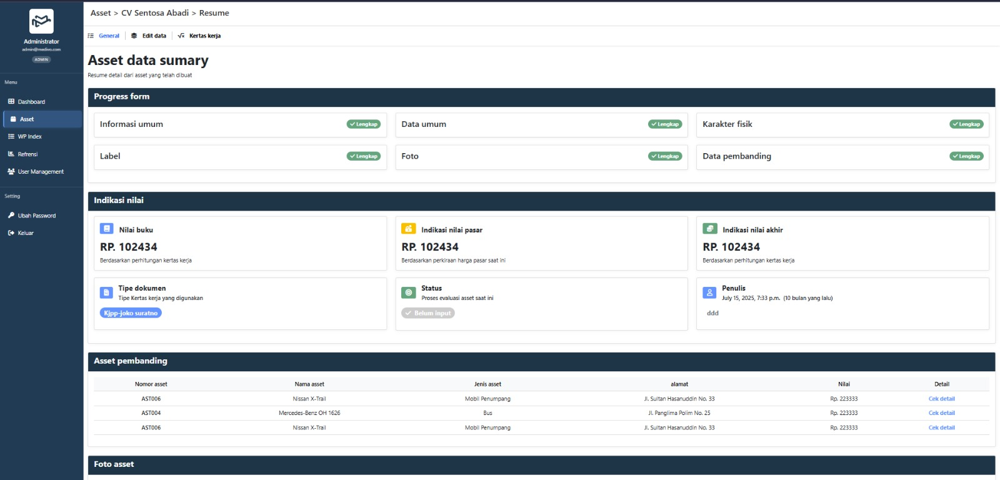
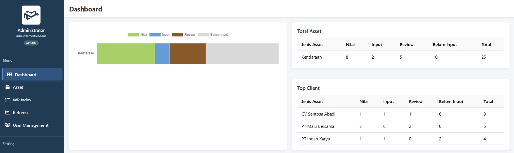

Form penilaian terstruktur
Enam bagian — informasi umum, data umum, karakter fisik, label, foto, dan data pembanding — masing-masing dengan status kelengkapan.
Proyek klien · Penilaian aset
Sistem penilaian aset kendaraan untuk Kantor Jasa Penilai Publik — dari input data lapangan dan aset pembanding hingga nilai akhir yang sudah direview, dalam satu alur kerja.

01 — Alur kerja
Dashboard menghitung aset per status, per jenis aset, dan per klien, sehingga manajer bisa melihat hambatan tanpa membuka berkas satu per satu.
Aset ditugaskan ke penilai sesuai klien
Form enam bagian, foto, dan pembanding
Kertas kerja dicek terhadap data
Indikasi nilai akhir tercatat

02 — Fitur utama
Dibangun dari kertas kerja dan aturan bisnis kantor itu sendiri, sehingga angkanya sesuai metode yang sudah dipercaya para penilai.
Enam bagian — informasi umum, data umum, karakter fisik, label, foto, dan data pembanding — masing-masing dengan status kelengkapan.
Nilai buku, indikasi nilai pasar, dan indikasi nilai akhir, dihitung dari kertas kerja.
Kaitkan kendaraan sejenis beserta lokasi dan nilainya sebagai dasar pendekatan pasar.
Penugasan terkini per klien, lengkap dengan status, penulis, dan waktu di setiap penilaian.
Total per jenis aset dan klien teratas, dirinci per status alur kerja.
Akses berbasis role dan manajemen pengguna, plus tabel referensi untuk perhitungan.